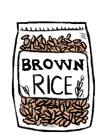

medium grain brown rice
Brown rice is medium or long-grain rice that has not been polished (still has its bran and germ). The rice is a beige, or light brown color and has not been refined. Brown rice is higher in vitamins, such as B1 (thiamine), but has a longer cooking time. Brown rice has a shelf life of approximately 6 months.How to cook brown rice: Use a rice to water ratio of 1:2. Rinse the rice thoroughly. Combine rice and water, stir in some salt. Bring to a boil and reduce heat and cover. Cook for 45 min. Take rice off heat, let rest for 10-15 min.
Germinated brown rice has a good nutritional profile, cooks faster than brown rice and has a better overall texture when cooked.
rice
Rice is the seed of the grass species Oryza sativa (asian rice) or Oryza glaberrima (african rice). Rice is the most important grain with regard to human nutrition and caloric intake, providing more than one-fifth of the calories consumed worldwide by humans. Many varieties of rice are fortified to reduce malnutrition.